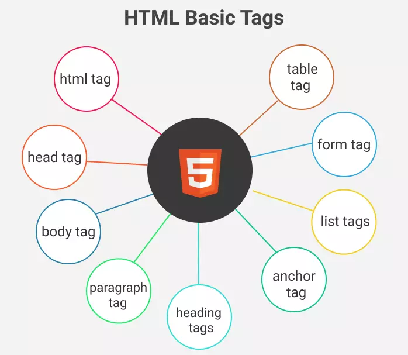

What is HTML?HTML stands for Hypertext Markup Language, and it is the language that most web pages and online applications are written in. A hypertext is a piece of text that references other pieces of text, whereas a markup language is a set of symbols that tell web servers about a document's style and structure. Because HTML lacks the ability to construct dynamic functionality, it is not considered a programming language. Instead, online users can utilise HTML elements, tags, and attributes to design and organise sections, paragraphs, and connections. HTML is a set of markup symbols or codes that are inserted into a file for Internet display. Each markup code (which falls between the "<" and ">" characters) is called an element, however many people also call it a tag. Though some of the elements come in pairs which will show some display effect is to start and when it is going to end |
 |
|  |
HTML TagsIn the history of Web design, HTML tags have always been crucial. They were in charge of the majority of Web code in the early days of the World Wide Web. HTML tags are still at the heart of how web pages are formatted, even if that isn't the case anymore. Tags for references, tables, headings, and much more can all be found in HTML. An HTML tag is made up of the tag name enclosed between angle brackets and may appear in a pair, forming the starting and ending tag of a piece of code, text, or other tags. The name appears at the start of the tag, and the name appears at the end of the tag with a slash ("/"). For instance, the HTML tag "p" will start with a paragraph while "/p" will end the paragraph. This right there will be an HTML |